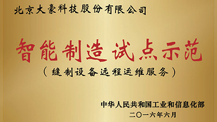
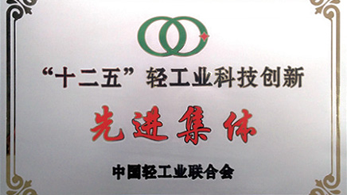

全国轻工行业“先进集体”全国轻工行业“先进集体”全国轻工行业“先进集体”全国轻工行业“先进集体”全国轻工行业“先进集体”全国轻工行业“先进集体”全国轻工行业“先进集体”
北京大豪科技股份有限公司成立于2000年，是专业从事各类缝制及针织设备电脑控制系统的研发、生产和销售的高新技术企业。大豪拥有三个综合基地、两个产品研发部、两个产品事业部及遍布海内外的十多个销售服务网点。
公司自主研发的“高效多头多功能刺绣机数控系统”获科技部、环保部、商务部、国家质监总局联合评选为“国家战略性创新产品”。